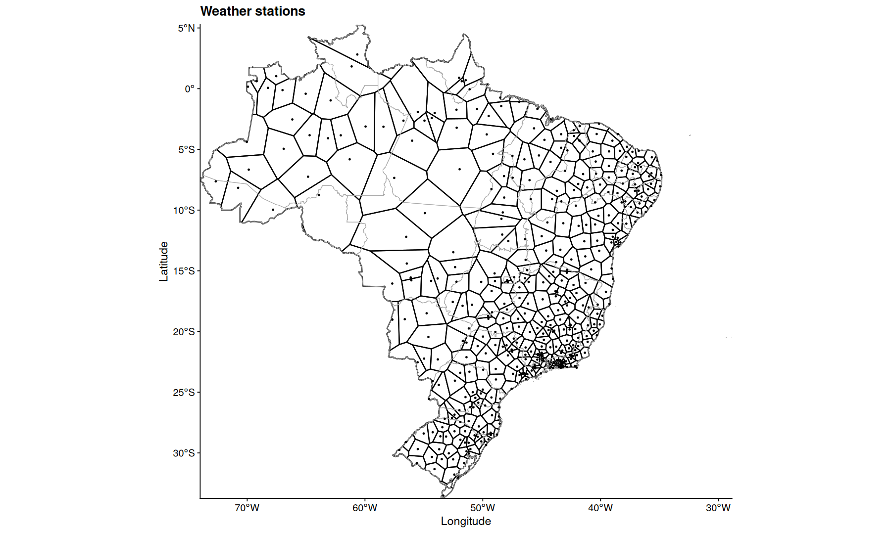
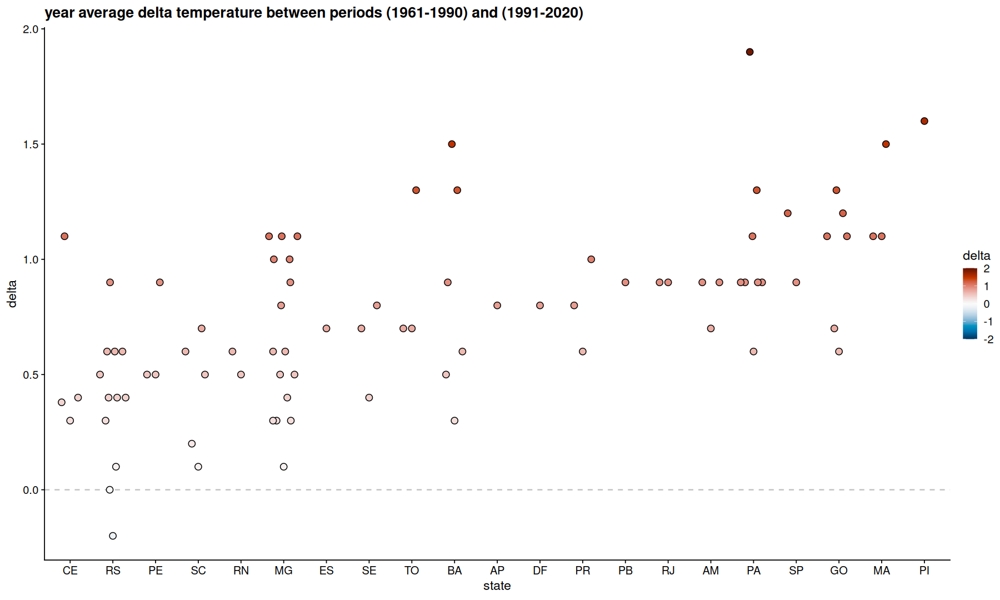

suppressPackageStartupMessages({
library(tidyverse)
library(cowplot)
library(sf)
library(geobr)
library(ggvoronoi)
library(paletteer)
library(scico)
library(ggbeeswarm)
theme_set(theme_cowplot())
})
options(repr.plot.width=15, repr.plot.height=9)
Climate Change in Brazil#
data from INMET: https://portal.inmet.gov.br/normais, downloaded on 2024-08-03
The data comprises of climate normals, a 30-year monthy temperature average of the periods of 1961-1990, 1981-2010 and 1991-2020.
df <-
read_tsv('merged.tsv', col_types='') |>
filter(!is.na(temp), !is.na(Altitude)) |>
rename(mes=agg) |>
mutate(mes = factor(mes, levels=c('Janeiro','Fevereiro','Marco','Abril',
'Maio','Junho','Julho','Agosto','Setembro',
'Outubro','Novembro','Dezembro','Ano')))
head(df)
| Codigo | Nome.da.Estacao | UF | mes | temp | Latitude | Longitude | Altitude | periodo |
|---|---|---|---|---|---|---|---|---|
| <dbl> | <chr> | <chr> | <fct> | <dbl> | <dbl> | <dbl> | <dbl> | <chr> |
| 82704 | CRUZEIRO DO SUL | AC | Janeiro | 25.3 | -7.633333 | -72.66667 | 170 | 1961-1990 |
| 82704 | CRUZEIRO DO SUL | AC | Fevereiro | 25.1 | -7.633333 | -72.66667 | 170 | 1961-1990 |
| 82704 | CRUZEIRO DO SUL | AC | Marco | 25.1 | -7.633333 | -72.66667 | 170 | 1961-1990 |
| 82704 | CRUZEIRO DO SUL | AC | Abril | 24.9 | -7.633333 | -72.66667 | 170 | 1961-1990 |
| 82704 | CRUZEIRO DO SUL | AC | Maio | 24.7 | -7.633333 | -72.66667 | 170 | 1961-1990 |
| 82704 | CRUZEIRO DO SUL | AC | Junho | 24.0 | -7.633333 | -72.66667 | 170 | 1961-1990 |
ggplot(df, aes(x=periodo, y=temp, color=UF)) +
geom_quasirandom() +
geom_boxplot(color='gray30',fill=NA, outlier.shape = NA) +
facet_grid(.~mes) +
theme(axis.text.x=element_text(angle=90,vjust=.5)) +
labs(y='temp celcius')
{kind=link}
filter(df, mes!='Ano') |>
summarize(
min_temp = quantile(temp, na.rm=T, p=0.25),
max_temp = quantile(temp, na.rm=T, p=0.75),
med_temp = median(temp, na.rm=T),
.by = c(mes, periodo),
) |>
ggplot(aes(x=mes, y=med_temp, fill=periodo, color=periodo, group=periodo)) +
geom_ribbon(alpha=0.3, aes(color=NULL,ymin=min_temp, ymax=max_temp)) +
geom_line(linewidth=1) +
geom_point(size=4)
{kind=link}
filter(df, mes!='Ano') |>
mutate(UF=fct_reorder(UF, temp)) |>
ggplot(aes(x=fct_reorder(periodo, temp, .na_rm=T), y=temp, color=mes)) +
geom_quasirandom() +
geom_boxplot(color='gray30',fill=NA, outlier.shape = NA) +
facet_grid(.~UF) +
theme(axis.text.x=element_text(angle=90,vjust=.5,family='mono')) +
labs(y='temp celcius',x='periodo')
{kind=link}
filter(df, mes!='Ano') |>
filter(!(UF %in% c('RO','DF','RR','AP','AC','SE','AL'))) |>
mutate(UF=fct_reorder(UF, temp, .na_rm=T)) |>
ggplot(aes(x=mes, y=temp, color=periodo)) +
geom_boxplot(outlier.shape = NA) +
facet_wrap(~UF) +
labs(x=NULL) +
theme(axis.text.x=element_text(angle=90,vjust=0.5))
{kind=link}
states <- read_state(
year = 2020,
showProgress = FALSE
)
Using year/date 2020
states_coords <-
states |>
st_union() |>
st_simplify() |>
st_boundary() |>
st_coordinates() |>
as.data.frame()
state_coords_1 <-
filter(states_coords,
L1 == (
count(states_coords, L1) |>
slice_max(n) |>
pull(L1)
)
) |>
select(X,Y)
slice_head(df, n=1, by=Codigo) |>
ggplot(aes(x=Longitude, y=Latitude)) +
stat_voronoi(geom='path', outline = state_coords_1, color='black') +
geom_sf(aes(x=NULL, y=NULL), fill=NA, color='darkgray', data=states, linewidth=0.3) +
geom_point(size=0.5) +
coord_sf(expand=0) +
labs(title='Weather stations')
Warning message:
"`fortify(<SpatialPolygonsDataFrame>)` was deprecated in ggplot2 3.4.4.
ℹ Please migrate to sf."
{kind=link}

slice_head(df, n=1, by=Codigo) |>
ggplot(aes(x=Longitude, y=Latitude, fill=Altitude)) +
geom_voronoi(outline = state_coords_1) +
geom_sf(aes(x=NULL, y=NULL), fill=NA, color='white', data=states, linewidth=0.3) +
scale_fill_viridis_c(option='inferno') +
coord_sf(expand=0)
{kind=link}
filter(df, mes=='Janeiro', !is.na(temp)) |>
ggplot(aes(x=Longitude, y=Latitude, fill=temp)) +
geom_voronoi(outline = state_coords_1) +
geom_sf(aes(x=NULL, y=NULL), fill=NA, color='black', data=states, linewidth=0.3) +
scale_fill_scico(palette = 'hawaii', direction = -1) +
coord_sf(expand=0) +
facet_wrap(~periodo) +
theme(legend.position='bottom') +
theme(legend.key.size = unit(2,"line")) +
labs(title='Average Temperature in January', fill='temp celcius')
{kind=link}
Temperature vs Altitude#
filter(df, mes=='Janeiro') |>
lm(temp ~ Altitude, data=_) -> m1
summary(m1)
Call:
lm(formula = temp ~ Altitude, data = filter(df, mes == "Janeiro"))
Residuals:
Min 1Q Median 3Q Max
-4.4842 -0.5922 0.1358 0.6923 3.3429
Coefficients:
Estimate Std. Error t value Pr(>|t|)
(Intercept) 26.8038505 0.0672737 398.43 <2e-16 ***
Altitude -0.0049851 0.0001264 -39.43 <2e-16 ***
---
Signif. codes: 0 '***' 0.001 '**' 0.01 '*' 0.05 '.' 0.1 ' ' 1
Residual standard error: 1.181 on 736 degrees of freedom
Multiple R-squared: 0.6787, Adjusted R-squared: 0.6783
F-statistic: 1555 on 1 and 736 DF, p-value: < 2.2e-16
# -1 temperature point per 200 Altitude
1/0.0049851
200.597781388538
filter(df, mes=='Janeiro') |>
mutate(res = m1$residuals) |>
ggplot(aes(x=Longitude, y=Latitude, fill=res)) +
geom_voronoi(outline = state_coords_1) +
geom_sf(aes(x=NULL, y=NULL), fill=NA, color='black', data=states, linewidth=0.3) +
scale_fill_paletteer_c(palette='grDevices::RdBu', direction = -1, limits=c(-4, 4), oob=scales::squish) +
coord_sf(expand=0) +
facet_wrap(~periodo) +
theme(legend.position='bottom') +
labs(title='January temperature change, adjusted for Altitude') +
theme(legend.key.size = unit(2,"line"))
{kind=link}
filter(df, mes=='Janeiro') |>
lm(temp ~ Altitude + Longitude + Latitude, data=_) -> m2
summary(m2)
Call:
lm(formula = temp ~ Altitude + Longitude + Latitude, data = filter(df,
mes == "Janeiro"))
Residuals:
Min 1Q Median 3Q Max
-2.90365 -0.55448 -0.04891 0.62727 2.71339
Coefficients:
Estimate Std. Error t value Pr(>|t|)
(Intercept) 30.0712899 0.2401458 125.22 <2e-16 ***
Altitude -0.0043443 0.0001102 -39.43 <2e-16 ***
Longitude 0.0504501 0.0048983 10.30 <2e-16 ***
Latitude 0.0741476 0.0043576 17.02 <2e-16 ***
---
Signif. codes: 0 '***' 0.001 '**' 0.01 '*' 0.05 '.' 0.1 ' ' 1
Residual standard error: 0.9349 on 734 degrees of freedom
Multiple R-squared: 0.7991, Adjusted R-squared: 0.7982
F-statistic: 972.9 on 3 and 734 DF, p-value: < 2.2e-16
filter(df, mes=='Janeiro') |>
mutate(res = m2$residuals) |>
ggplot(aes(x=Longitude, y=Latitude, fill=res)) +
geom_voronoi(outline = state_coords_1) +
geom_sf(aes(x=NULL, y=NULL), fill=NA, color='black', data=states, linewidth=0.3) +
scale_fill_paletteer_c(palette='grDevices::RdBu', direction = -1, limits=c(-3, 3), oob=scales::squish) +
coord_sf(expand=0) +
facet_wrap(~periodo) +
theme(legend.position='bottom') +
labs(title='January temperature change, adjusted for Altitude+Longitude+Latitude') +
theme(legend.key.size = unit(2,"line"))
{kind=link}
filter(df, mes=='Janeiro') |>
lm(temp ~ UF + Altitude + Longitude + Latitude, data=_) -> m3
summary(m3)
Call:
lm(formula = temp ~ UF + Altitude + Longitude + Latitude, data = filter(df,
mes == "Janeiro"))
Residuals:
Min 1Q Median 3Q Max
-2.53425 -0.44375 -0.00074 0.47207 1.91739
Coefficients:
Estimate Std. Error t value Pr(>|t|)
(Intercept) 20.359912 1.029470 19.777 < 2e-16 ***
UFAL 4.669301 0.600367 7.777 2.62e-14 ***
UFAM -0.256167 0.324327 -0.790 0.42988
UFAP 0.181087 0.518513 0.349 0.72701
UFBA 4.670519 0.514136 9.084 < 2e-16 ***
UFCE 4.157320 0.532656 7.805 2.14e-14 ***
UFDF 4.346347 0.580237 7.491 2.05e-13 ***
UFES 4.744603 0.577723 8.213 1.03e-15 ***
UFGO 4.503830 0.450074 10.007 < 2e-16 ***
UFMA 2.529512 0.466128 5.427 7.89e-08 ***
UFMG 4.962694 0.499729 9.931 < 2e-16 ***
UFMS 4.534043 0.457622 9.908 < 2e-16 ***
UFMT 3.067743 0.400213 7.665 5.90e-14 ***
UFPA 1.168258 0.402401 2.903 0.00381 **
UFPB 4.759465 0.592570 8.032 4.01e-15 ***
UFPE 4.970667 0.560150 8.874 < 2e-16 ***
UFPI 3.932376 0.500039 7.864 1.39e-14 ***
UFPR 4.098236 0.493529 8.304 5.11e-16 ***
UFRJ 4.795814 0.541195 8.862 < 2e-16 ***
UFRN 5.103790 0.576758 8.849 < 2e-16 ***
UFRO 0.148463 0.780146 0.190 0.84913
UFRR 0.881576 0.548167 1.608 0.10823
UFRS 3.280858 0.521889 6.287 5.68e-10 ***
UFSC 3.330361 0.530682 6.276 6.07e-10 ***
UFSE 4.457375 0.591741 7.533 1.52e-13 ***
UFSP 4.486961 0.499399 8.985 < 2e-16 ***
UFTO 3.185915 0.456526 6.979 6.86e-12 ***
Altitude -0.005192 0.000109 -47.612 < 2e-16 ***
Longitude -0.105415 0.014122 -7.464 2.46e-13 ***
Latitude 0.142920 0.016706 8.555 < 2e-16 ***
---
Signif. codes: 0 '***' 0.001 '**' 0.01 '*' 0.05 '.' 0.1 ' ' 1
Residual standard error: 0.7253 on 708 degrees of freedom
Multiple R-squared: 0.8834, Adjusted R-squared: 0.8786
F-statistic: 184.9 on 29 and 708 DF, p-value: < 2.2e-16
filter(df, mes=='Janeiro') |>
mutate(res = m3$residuals) |>
ggplot(aes(x=Longitude, y=Latitude, fill=res)) +
geom_voronoi(outline = state_coords_1) +
geom_sf(aes(x=NULL, y=NULL), fill=NA, color='black', data=states, linewidth=0.3) +
scale_fill_paletteer_c(palette='grDevices::RdBu', direction = -1, limits=c(-3, 3), oob=scales::squish) +
coord_sf(expand=0) +
facet_wrap(~periodo) +
theme(legend.position='bottom') +
labs(title='January temperature change, adjusted for Altitude+Longitude+Latitude+UF') +
theme(legend.key.size = unit(2,"line"))
{kind=link}
filter(df, mes=='Ano') |>
lm(temp ~ UF + Altitude + Longitude + Latitude, data=_) -> m4
summary(m4)
Call:
lm(formula = temp ~ UF + Altitude + Longitude + Latitude, data = filter(df,
mes == "Ano"))
Residuals:
Min 1Q Median 3Q Max
-2.87835 -0.57859 -0.00098 0.60844 3.05717
Coefficients:
Estimate Std. Error t value Pr(>|t|)
(Intercept) 20.5151139 1.3097334 15.664 < 2e-16 ***
UFAL 4.1351596 0.7752313 5.334 1.31e-07 ***
UFAM -0.3251572 0.4248844 -0.765 0.444371
UFAP 0.3029129 0.6611421 0.458 0.646981
UFBA 4.5265385 0.6660147 6.796 2.37e-11 ***
UFCE 3.8892245 0.6883239 5.650 2.37e-08 ***
UFDF 5.1397953 0.7391640 6.954 8.46e-12 ***
UFES 4.7171152 0.7416989 6.360 3.73e-10 ***
UFGO 5.5363202 0.5851868 9.461 < 2e-16 ***
UFMA 3.1349333 0.6047224 5.184 2.88e-07 ***
UFMG 5.1089479 0.6465612 7.902 1.13e-14 ***
UFMS 4.4115166 0.5912692 7.461 2.66e-13 ***
UFMT 3.7196637 0.5214658 7.133 2.55e-12 ***
UFPA 1.4943098 0.5249232 2.847 0.004552 **
UFPB 4.2387263 0.7595194 5.581 3.47e-08 ***
UFPE 4.2939043 0.7260379 5.914 5.31e-09 ***
UFPI 4.8752291 0.6486859 7.516 1.82e-13 ***
UFPR 3.2291393 0.6389625 5.054 5.59e-07 ***
UFRJ 4.4907323 0.6986984 6.427 2.46e-10 ***
UFRN 4.4770467 0.7469206 5.994 3.34e-09 ***
UFRO 0.8268439 0.9732641 0.850 0.395874
UFRR -0.1310591 0.6925815 -0.189 0.849968
UFRS 1.7029729 0.6728096 2.531 0.011596 *
UFSC 2.3531834 0.6836131 3.442 0.000613 ***
UFSE 4.1843957 0.7582751 5.518 4.89e-08 ***
UFSP 4.4207214 0.6450926 6.853 1.64e-11 ***
UFTO 4.5100513 0.5904990 7.638 7.63e-14 ***
Altitude -0.0049841 0.0001361 -36.626 < 2e-16 ***
Longitude -0.1124812 0.0178121 -6.315 4.92e-10 ***
Latitude 0.2803677 0.0209919 13.356 < 2e-16 ***
---
Signif. codes: 0 '***' 0.001 '**' 0.01 '*' 0.05 '.' 0.1 ' ' 1
Residual standard error: 0.8947 on 672 degrees of freedom
Multiple R-squared: 0.9278, Adjusted R-squared: 0.9246
F-statistic: 297.6 on 29 and 672 DF, p-value: < 2.2e-16
filter(df, mes=='Ano') |>
mutate(res = m4$residuals) |>
ggplot(aes(x=Longitude, y=Latitude, fill=res)) +
geom_voronoi(outline = state_coords_1) +
geom_sf(aes(x=NULL, y=NULL), fill=NA, color='black', data=states, linewidth=0.3) +
scale_fill_paletteer_c(palette='grDevices::RdBu', direction = -1, limits=c(-3, 3), oob=scales::squish) +
coord_sf(expand=0) +
facet_wrap(~periodo) +
theme(legend.position='bottom') +
labs(title='Year average temperature change, adjusted for Altitude+Longitude+Latitude+UF') +
theme(legend.key.size = unit(2,"line"))
{kind=link}
delta temperature#
filter(df, mes=='Ano') |>
pivot_wider(names_prefix='p', names_from = periodo, values_from = temp) |>
filter(Codigo==83630)
| Codigo | Nome.da.Estacao | UF | mes | Latitude | Longitude | Altitude | p1961-1990 | p1981-2010 | p1991-2020 |
|---|---|---|---|---|---|---|---|---|---|
| <dbl> | <chr> | <chr> | <fct> | <dbl> | <dbl> | <dbl> | <dbl> | <dbl> | <dbl> |
| 83630 | FRANCA | SP | Ano | -20.58333 | -47.36667 | 1026.20 | 20.5 | NA | NA |
| 83630 | FRANCA | SP | Ano | -20.58333 | -47.36667 | 1026.20 | NA | 20.9 | NA |
| 83630 | FRANCA | SP | Ano | -20.58431 | -47.38243 | 1003.55 | NA | NA | 21.4 |
df |>
select(Codigo, mes, temp, periodo) |>
pivot_wider(names_prefix='p', names_from = periodo, values_from = temp) |>
mutate(delta = `p1991-2020` - `p1961-1990`) |>
filter(!is.na(delta)) |>
ggplot(aes(x=delta)) +
geom_density() +
facet_wrap(~mes) +
geom_vline(xintercept=0, linetype=2, color='gray') +
labs(x='average delta temperature between periods (1961-1990) and (1991-2020)')
{kind=link}
filter(df, mes=='Ano') |>
select(Codigo, temp, UF, periodo) |>
pivot_wider(names_prefix='p', names_from = periodo, values_from = temp) |>
mutate(delta = `p1991-2020` - `p1961-1990`) |>
filter(!is.na(delta)) |>
ggplot(aes(x=fct_reorder(UF,delta), y=delta, fill=delta)) +
scale_fill_paletteer_c(palette='grDevices::RdBu', direction = -1, limits=c(-2, 2), oob=scales::squish) +
geom_hline(yintercept=0, linetype=2, color='gray') +
geom_quasirandom(size=3, shape=21) +
labs(x='state',title='year average delta temperature between periods (1961-1990) and (1991-2020)')
Warning message in regularize.values(x, y, ties, missing(ties), na.rm = na.rm):
"collapsing to unique 'x' values"
Warning message in regularize.values(x, y, ties, missing(ties), na.rm = na.rm):
"collapsing to unique 'x' values"
{kind=link}
